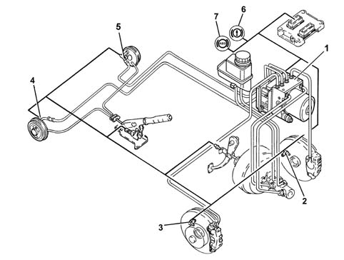
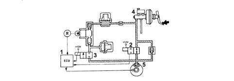
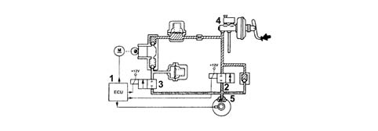
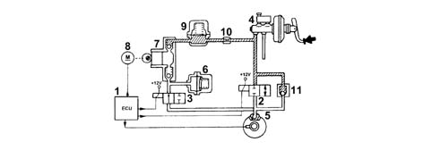
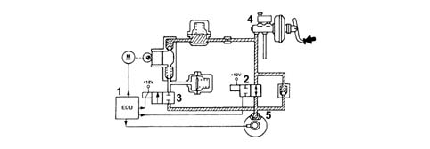
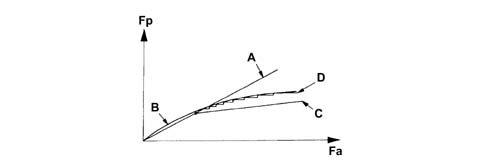

Introduction - A(B.S. ANTI-LOCK BRAKING SYSTEM .)
- Path
- Descriptions > 33 BRAKING SYSTEM > 3340 A(B.S. ANTI-LOCK BRAKING SYSTEM .) > Introduction - A(B.S. ANTI-LOCK BRAKING SYSTEM .)
- Kind
- system description
- Applies to
- all engines; all production periods
- Interactive page
- https://sloeber94.github.io/elrnDB-fPnd/en/#/2753474
Applies to: all engines; all production periods
The vehicle is fitted with an ABS/EBD brake control system.
The ABS/EBD is Bosch 8.0 type
The ABS is fitted in parallel to the hydraulic brake system so that braking is still assured even if the ABS is faulty.
The ABS incorporates EBD (Electronic Brakeforce Distribution) to regulate and distribute brakeforce electronically over the axles. The brake system does not therefore include a mechanical load proportioning valve to distribute weight over both axles.
VIEW OF ASSEMBLY

1 - ABS/EBD control unit 2 - Left front wheel left 3 - Right front wheel right 4 - Right rear wheel right 5 - Left rear wheel left 6 - EBD warning light 7 - ABS warning light
Applies to: all engines; all production periods
According to the electrical system present on the vehicle, the A.B.S. 8.0 Bosch is connected::
- via SERIAL LINE to the NCM, airbag control unit and tester output (K). In this case, the ABS control unit is equipped with a F line connected to the NPL for recovery mode.
- to the C-CAN line and takes the name of Brake Node. In this case too, the serial connection to the tester output (K line) is maintained
If the vehicle electrical system includes a C-CAN line, the ABS control unit is always connected to the C-CAN line.
The ABS Bosch 8.0 control unit may be fitted to the following specifications of the vehicle:
- With EBD
- With EBD and EPS system (Electronic Stability Program) that includes ASR/MSR/HBA/HHC functions.
Applies to: all engines; all production periods
Structure
The Bosch 8.0 A.B.S. system consists of:
- an electronic control unit built into the hydraulic control unit;
- an electro-hydraulic control unit which modulates the braking pressure via eight solenoid valves, two for each wheel;
- four ACTIVE MAGNETORESISTIVE sensors which detect the angular rotation speed of the wheels.
- wiring with specific connector.
Applies to: all engines; all production periods
Introduction
The electronic control unit processes signals from active sensor and the brake light control switch. The control unit then implements strategies to detect the wheel or wheels that are tending to lock (maximum slip between wheel and road surface). The unit then modulates brake fluid pressure selectively for the front wheels and in tandem for the rear wheels (select-low function).
The ABS system modulates braking pressure in three basic stages:
- 1st pressure maintenance stage
- 2nd pressure reduction stage
- 3rd pressure increase stage
When the ABS is required to intervene, it remains active until the speed drops to 2.7 km/h but then cuts out to allow the car to stop.
After each Key ON and when 6 km/h is exceeded, the control unit carries out a test on the operation of the solenoid valves and the pump motor and the control unit also tests the sensors when 12 km/h is exceeded.
The body computer node identifies the ABS as a component of the C-CAN network (if present) at the first Key ON
Applies to: all engines; all production periods
Pressure increase stage without ABS intervention
With the brake pedal pressure, the electronic control unit (1):
- does not supply the pressurizing solenoid valve (N.A.) (2)
- does not supply the discharge solenoid valve (N.C.) (3).
Therefore, the pressure produced by the brake pump (4) reaches the brake calipers (5) without undergoing variations.

Applies to: all engines; all production periods
Pressure maintenance stage
The electronic control unit (1):
- supplies the pressurizing solenoid valve (N.A.) (2)
- does not supply the discharge solenoid valve (N.C.).
Therefore, the hydraulic connection between the brake pump (4) and the brake caliper (5) is interrupted.
The pressure in the brake caliper (5) remains constant even if the pressure on the brake pedal increases.

Applies to: all engines; all production periods
Pressure reduction stage
The electronic control unit:
- supplies the pressurizing solenoid valve (N.A.) (2)
- supplies the discharge solenoid valve (N.C.) (3).
The hydraulic connection between the brake pump (4) and the brake caliper (5) is interrupted and the pressurizing solenoid valve (3) opens and places the brake caliper (5) in contact with the low pressure accumulator (6) and the recovery pump (7).
The electronic control unit (1) also supplies the drive motor (8) of recovery pump (7) to reintroduce the fluid removed from the brake caliper (5) back into the main circuit.
The fluid passes through the high pressure accumulator (9) and the restricter (10) which have a damping effect.
The system is equipped with a single-acting valve (11) fitted in parallel to the pressurizing valve (2) which allows a rapid reduction in the pressure at the brake caliper (5) when the brake pedal is released.

Applies to: all engines; all production periods
Pressure increase stage
The electronic control unit (1):
- does not supply the pressurizing solenoid valve (N.A.) (2)
- does not supply the discharge solenoid valve (N.C.) (3).
The fluid that was re-introduced into the main circuit is then free to return to brake calipers (5) and increase pressure acting on the brake calipers.

Applies to: all engines; all production periods
EBD function (Electronic Brake force Distribution)
The EBD function controls the distribution of the brake force and therefore replaces the conventional mechanical load proportioning valve making it possible to:
- act only on the rear brakes;
- improve the distribution of the brake forces
- intervene in an optimum manner in all load conditions (static or dynamic), driving conditions (in a straight line or round bends) and condition of the vehicle (tyres, brakes and suspension worn);
- implement a strategy which follows the ideal distribution curve.

Fa - front axle brake force Fp- rear axle brake force A - Distribution curve implemented by the braking system B - Ideal distribution curve C - Distribution curve implemented by the conventional hydraulic load proportioning valve D - Distribution curve implemented by the EDB function
Applies to: all engines; all production periods
EBD function (Electronic Brake force Distribution)
A failure in the EBD function is signalled by the following warning lights coming on simultaneously:
- ABS warning light;
- insufficient brake fluid and/or handbrake applied warning light
It is therefore necessary to drive the vehicle extremely carefully to the nearest authorized workshop to have the system checked.
Applies to: all engines; all production periods
Recovery
The electronic control unit is equipped with a safety circuit which has the task of safeguarding the efficiency of the A.B.S. system.
With the ignition key inserted, the safety circuit checks the following for 4 seconds:
- the operation of the electronic control unit
- it activates the solenoid valves to check their operation
- it monitors the C-CAN network (where present)
Each time the vehicle sets off from a stationary position, the safety circuit checks the presence of the active sensor signals.
With the vehicle driving, the safety circuit behaves in the following way:
- it continuously compares the angular speed of the wheels with the reference speed calculated
- it checks the memory conditions
- it checks the operation of the solenoid valves and the pump motor;
- it constantly checks the battery voltage
- it monitors efficiency of the C-CAN network (where present)
If the safety circuit has detected one or more irregularities with the system components during the checking stage it behaves in the following way:
- it switches off the A.B.S. system while still ensuring the efficiency of the conventional braking system;
- it signals the irregular condition to the driver by the warning light in the instrument panel coming on.